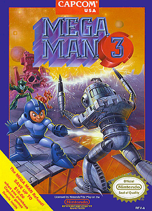
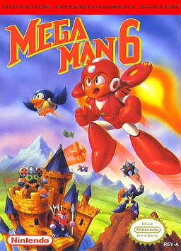
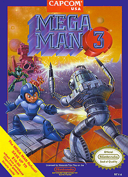
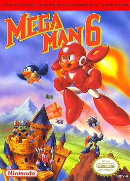
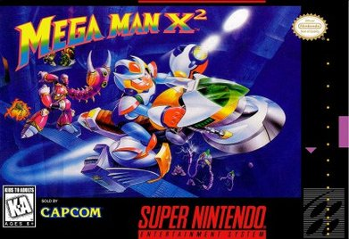
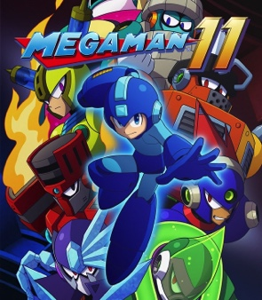
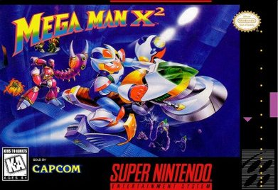
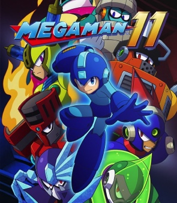

Projects
 Mega-Man One BomberMan Walkthrough

Mega-Man Two Longplay

Mega-Man Six Walkthrough
Mega-Man One BomberMan Walkthrough

Mega-Man Two Longplay

Mega-Man Six Walkthrough
 Mega-Man X Speed Run

Mega-Man X2

Mega-Man 11
Mega-Man X Speed Run

Mega-Man X2

Mega-Man 11
Statistics
Year of creation: 200X (20XX in Mega Man Powered Up) A.I. age: Around 10 years old Height: 132 cm (4'4") Weight: 105 kg (230 lbs) Energy: Solar energy Material: Ceramic titanium alloy Maximum output: 1500PS/1200rpm Maximum torque: 220 kg-m/8500rpm
Mega Man has a solar energy intake above his head and a compact, supercomputer brain. His body has a solar-pile reactor developed by Dr. Light, an EPROM and the circuit board. His body armor is constructed of a unique, flexible, ceramic titanium alloy that bends under severe impacts then retains its shape, rather than breaking or shattering. His legs have suspension and air pressure pumps below the feet that help in his jumps and cushion his landings, even from great heights. He has magnetic joints.
ライト博士によって生み出された心やさしいお手伝いロボット「ロック」。Dr.ワイリーの野望を打ち砕くべく、自ら戦闘用ロボットになる道を選んだ。